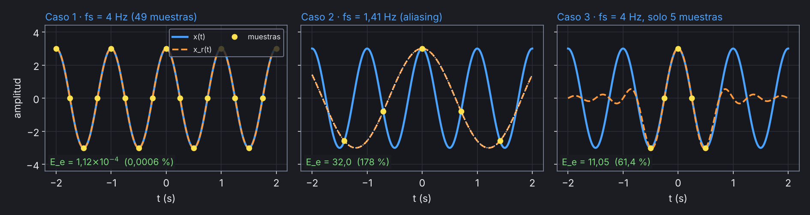

Interpolación sinc, reconstrucción perfecta y errores de reconstrucción
Señales y Sistemas · UNSA
Integrantes
Huallpa Huaraca Bily Jhaison
Naventa Huachani John Antony
Aguilar Mamani Jean Carlo Moises
Bellido Márquez Fernando Aldair
Al muestrear, de la señal continua \(x(t)\) solo guardamos valores sueltos \(x(kT_s)\).
Reconstruir es el camino inverso: de las muestras volver a \(x(t)\).
Señal: \(x(t)=3\cos(2\pi t)\), con \(B=1\) Hz.
Muestreamos con \(T_s=\tfrac14\) s, es decir \(f_s=4\) Hz.
Con esas muestras (puntos amarillos) reconstruimos la señal: la curva naranja cae justo sobre la azul.
Si se cumplen las tres, \(x(t)\) se recupera sin error. Si falla alguna, aparece un error de reconstrucción.
Muestrear repite el espectro cada \(f_s\) (clase, Ej. 9):
$$X_m(f)=f_s\sum_{k=-\infty}^{\infty}X(f-kf_s)$$Un filtro rectangular \(H(f)=T_s\,\mathrm{rect}_{f_s}(f)\) deja solo la copia central:
Por dualidad, ese rectángulo en frecuencia es una sinc en el tiempo.
Cada muestra pone una sinc centrada en su posición y a su altura. La suma de todas es la señal:
Fórmula de Whittaker-Shannon. En \(t=nT_s\) todas las sincs valen 0 menos una, que vale 1: la curva pasa por todas las muestras.
\(x(t)=3\cos(2\pi t)\), \(T_s=\tfrac14\), \(f_s=4>2B=2\): cumple. Muestras: \(3,0,-3,0,3,\dots\)
| \(k\) | \(x[k]\) | \(\mathrm{sinc}(\tfrac12-k)\) | término |
|---|---|---|---|
| 0 | 3 | 0,6366 | 1,9099 |
| 2 | −3 | −0,2122 | 0,6366 |
| −2 | −3 | 0,1273 | −0,3820 |
Sumando más términos:
| \(|k|\le\) | 0 | 2 | 4 | 10 | 100 |
|---|---|---|---|---|---|
| \(x_r(\tfrac18)\) | 1,910 | 2,165 | 2,104 | 2,125 | 2,121 |
Si \(f_s\lt2B\) (o la señal no es de banda limitada) las copias se solapan: dos señales distintas dan las mismas muestras.
\(f_s=\sqrt2\approx1{,}41\lt2B=2\): no cumple. Como en el aliasing de clase:
$$\cos(2\pi\cdot0{,}7071\,n)=\cos\big(2\pi(0{,}7071-1)\,n\big)=\cos(2\pi\cdot0{,}2929\,n)$$La suma se corta y queda error, sobre todo en los bordes.
\(h(t)\) existe para \(t\lt0\): usaría muestras futuras.
Ningún circuito baja de golpe en \(f_s/2\): se usan filtros aproximados.
Medimos el error con la energía de clase:
import numpy as np
x = lambda t: 3 * np.cos(2 * np.pi * t)
Ts = 1/4 # caso 1: fs = 4 Hz
k = np.arange(-24, 25) # índices de muestras
tk, xk = k * Ts, x(k * Ts) # muestras
t = np.linspace(-2, 2, 4001)
xr = np.sinc((t[:, None] - tk) / Ts) @ xk # suma de sincs
Ee = np.sum((x(t) - xr)**2) * (t[1] - t[0]) # energía del error| Caso | \(T_s\) | \(f_s\) | ¿Cumple? |
|---|---|---|---|
| 1 | 1/4 | 4 | sí |
| 2 | 1/√2 | 1,41 | no (aliasing) |
| 3 | 1/4, 5 muestras | 4 | pocas muestras |

| Caso | Muestras | \(E_e\) | % de \(E_x\) |
|---|---|---|---|
| 1 · \(f_s=4\) | 49 | 1,12×10⁻⁴ | 0,0006 |
| 2 · \(f_s=1{,}41\) | 113 | 32,0 | 178 |
| 3 · \(f_s=4\), pocas | 5 | 11,05 | 61,4 |
| 1 con ±48 s | 385 | 2,80×10⁻⁸ | ≈ 0 |